Dashboard
OPD
An OPD (Out-Patient Department) desk is the area in a hospital or clinic where patients first report for consultations, treatment, or other outpatient services. The OPD desk is critical in managing patient flow and ensuring smooth operation of the outpatient services..
* DR. DESK MC
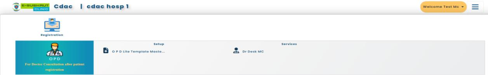After Patient Registration go to OPD desk click on Dr. Desk MC .
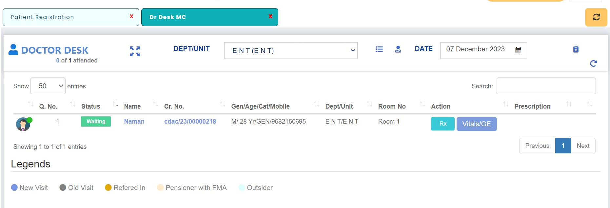a. Vitals/Ge
Vital signs are a group of the most important medical signs that indicate the status of the body's vital (life-sustaining) functions. These measurements are taken to help assess the general physical health of a person, give clues to possible diseases, and show progress toward recovery.i. The primary vital signs include:
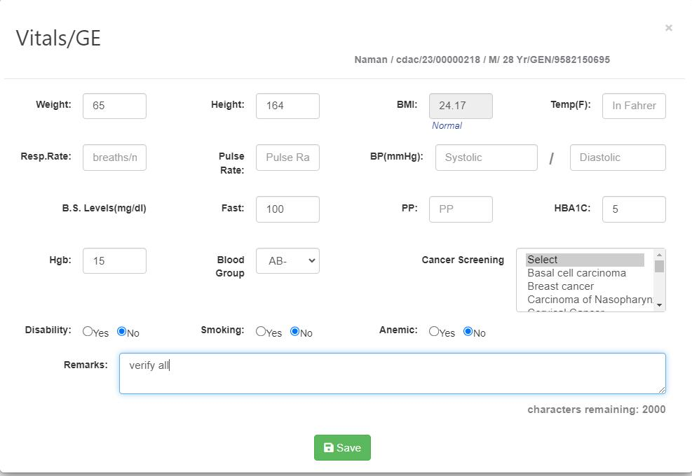
Click on save button a “success” will appear on screen.
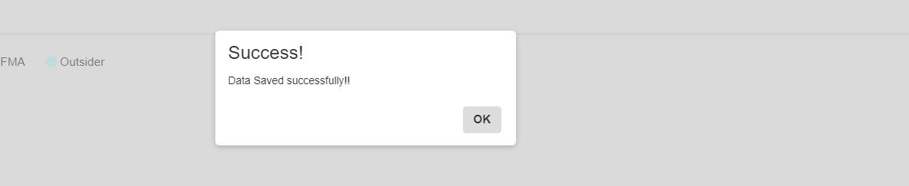b. Rx
The symbol "Rx" is commonly used in the field of medicine, particularly in prescriptions. 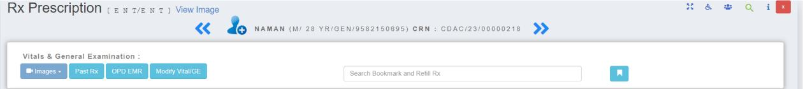1. Chief Complaint:
- Importance of the Chief Complaint:
- - Patient Name: Naman
- - Date of Visit: January 1, 2023
- - Chief Complaint (CC): "Feeling very tired and short breathe for the past 3 days "
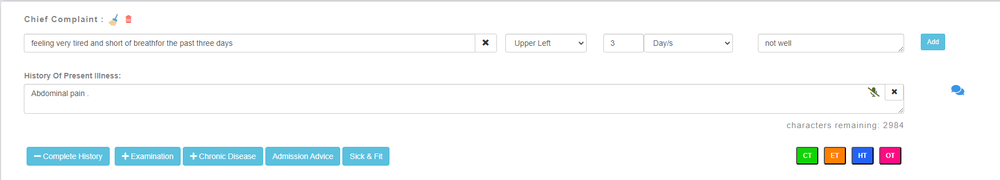
a. Complete History
A "Complete History" in the context of medical evaluation refers to a collection of information regarding a patient's medical background. This not only includes the patient's current symptoms and problems but also their past medical history, family history, and other relevant aspects of their health and lifestyle.
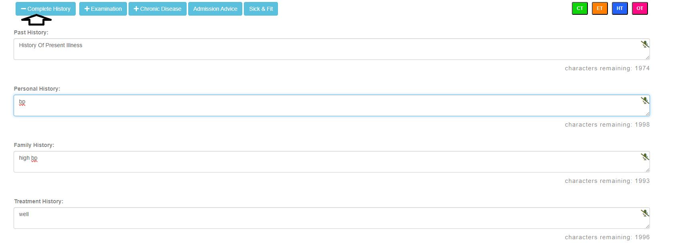b. Examination
An "examination" refers to the systematic evaluation of a patient to determine their health status. Here’s a general overview of the process:c. Chronic Disease
Chronic diseases such as heart disease, cancer, and diabetes are the leading causes of death and disability in the United States. 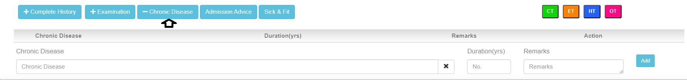d. Admission Advice
"Admission advice" typically refers to a recommendation made by a healthcare provider for a patient to be admitted to a hospital treatment. Fill all mandatory details like:- Department, Unit, Ward, proposed Admission Date, Advice By. An "examination" refers to the systematic evaluation of a patient to determine their health status. Here’s a general overview of the process: 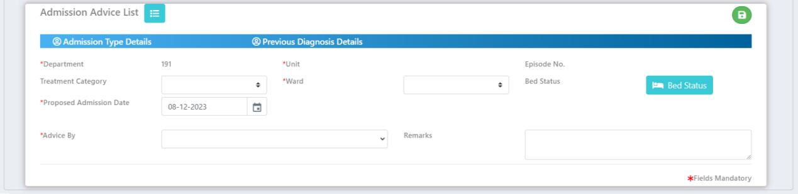e. Sick & Fit
"Sick & Fit" might be related to a health and wellness application or platform that offers features for both individuals dealing with health issues ("Sick") and those focused on fitness and well-being ("Fit").2. Diagnosis:
The process of determining the nature of a disease or disorder and distinguishing it from other possible conditions.a. Other Diagnosis
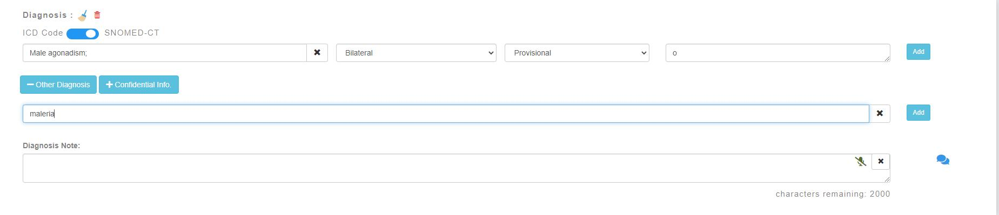b. Confidential Info
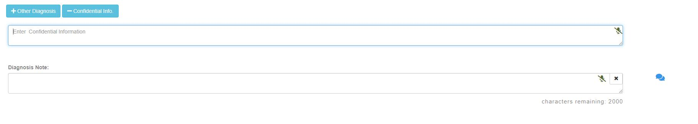3. Investigation:
Investigations refer to the various procedures and tests conducted by healthcare professionals to gather information about a patient's health condition. For example:- Blood Tests, Biopsy, Endoscopy, etc. 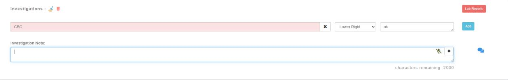4. Procedure(s) advised/Treated
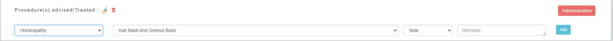When user click on add button details are added.
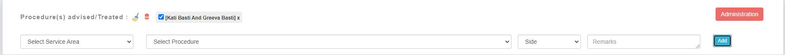5. Treatment Advice
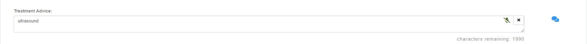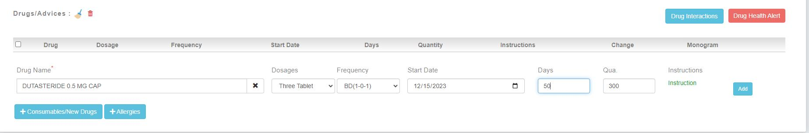
a. Consumption/New drug
Enter drug name , dosages, frequency, start date, days and qua.>
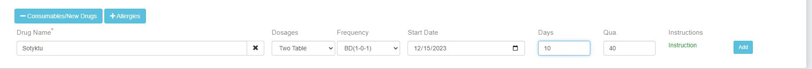b. Allergies
Allergies are hypersensitive immune responses to substances that either enter or come into contact with the body.
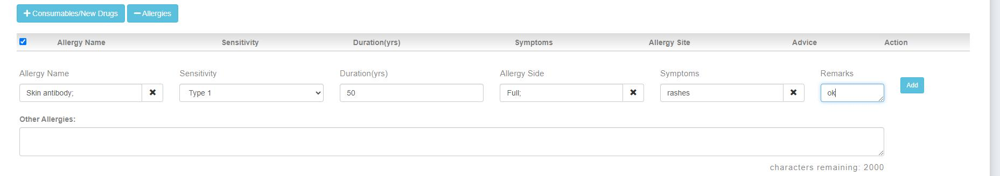6. Referral
Referrals typically refers to information.
7. Follow up and visit summary
A “Follow up” refers to visit interaction after an initial medical and visit summary treatment. “Visit Summary” is a document provided to the patient after a medical consultant that summarize the key aspect of the visit.
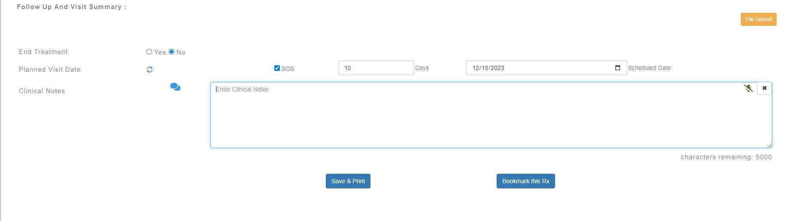Save & Print
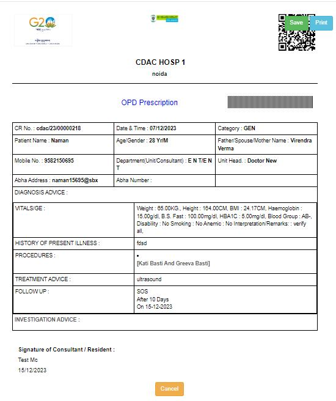File upload
Choose an valid file to start upload .
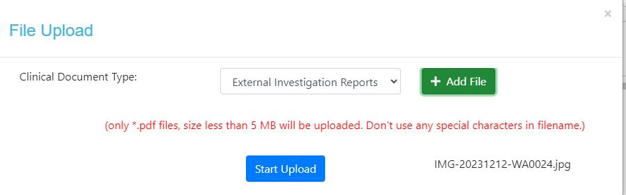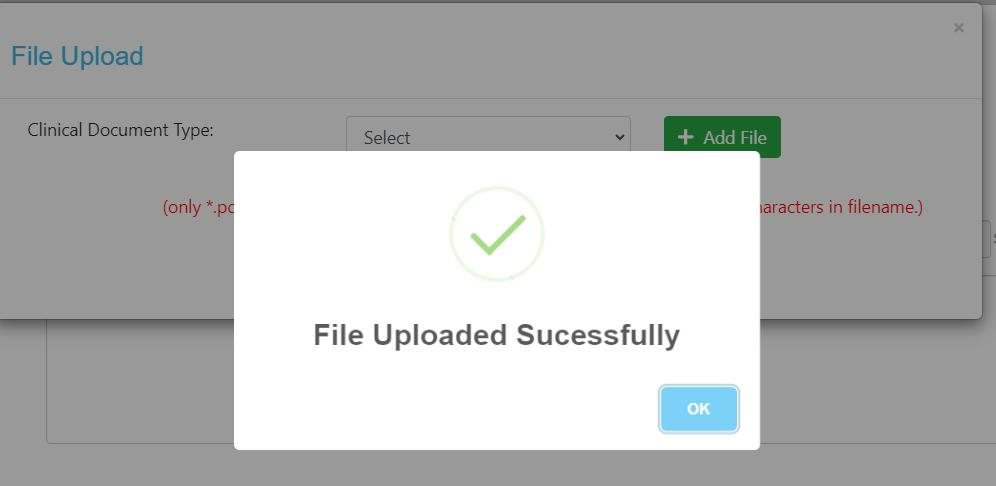
Click on Bookmark this Rx a pop-up message will appear on screen. Enter bookmark name and bookmark description after filing these details click on save bookmark & preview Rx button.
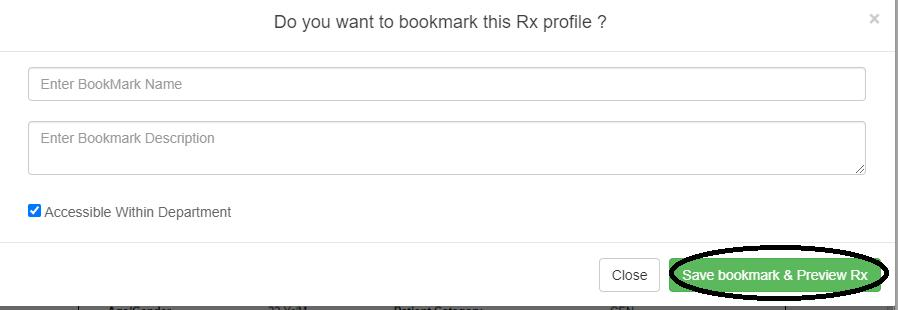